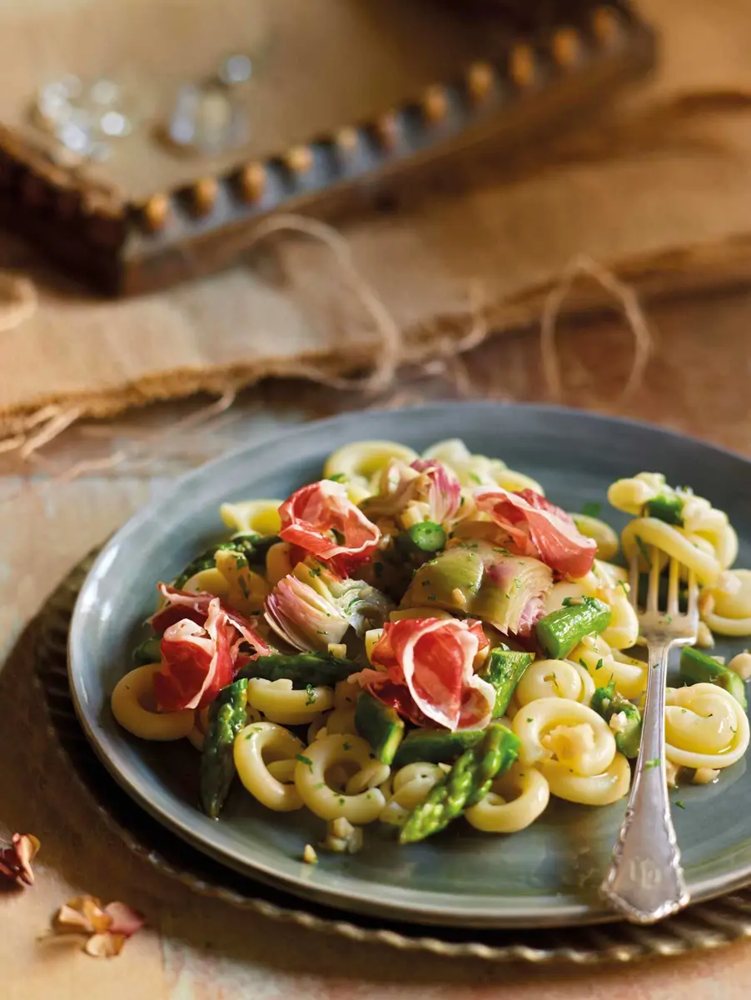
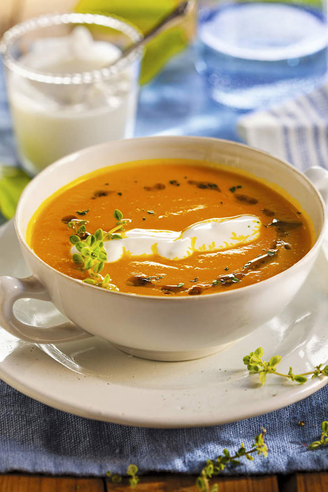
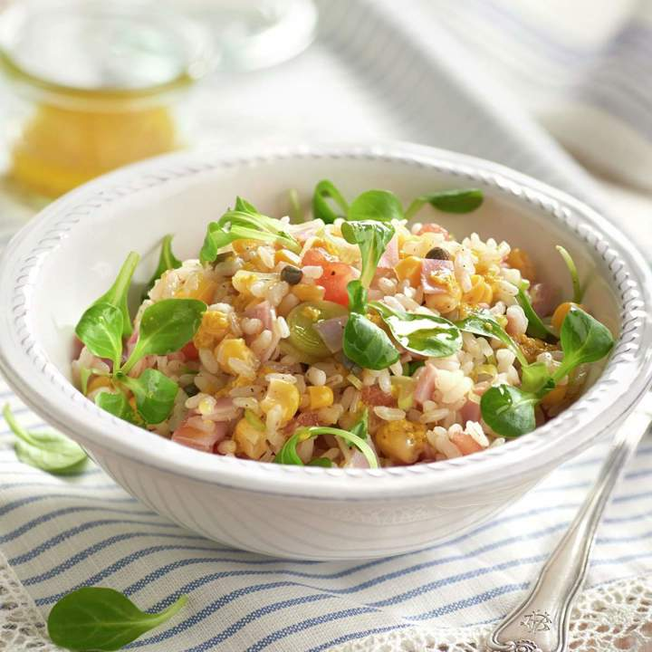

Salud Vital
Recetas

Pasta con jamón, espárragos y alcachofas
Una receta deliciosa y nutritiva que combina lo mejor de la pasta con el sabor intenso del jamón, la frescura de los espárragos verdes y la suavidad de las alcachofas.
Lista de ingredientes
- Espárragos verdes
- Pasta corta
- 1 limón
- alcachofas
- Jamón serrano
- Almendras
- Ajo
- Perejil
- Sal y Aceite
Preparación
- Limpia, lava y corta en gajos 4 alcachofas. Cuécelas en agua salada y con el zumo de limón, durante 10 minutos.
- Cuece 350 gramos de pasta en agua salada, hasta que esté al dente. Escúrrela.
- Limpia un manojo de espárragos, lávalos y saltéalos 2 min en un fondo de aceite.
- Mezcla el ajo pelado y picado con 20 gramos de almendras y las alcachofas escurridas.
- Sazona, añade la pasta y sirve con unas lonchas de jamón y perejil.
Tabla Nutricional
| Nutrientes | Por receta | Por porción(1/4) |
|---|---|---|
| Calorías | 1865 kcal | 466 kcal |
| Proteínas | 52 g | 13 g |
| Grasas | 45 g | 11 g |
| Carbohidratos | 180 g | 45 g |

Crema Fría de zanahoria
La crema fría de zanahoria es una receta ligera, nutritiva y refrescante, ideal para los días calurosos. Rica en fósforo, fibra y vitaminas.
Lista de ingredientes
- 8 zanahorias
- 1 cebolla
- 1 hoja de laurel
- ½ cucharadita de cúrcuma
- ½ cucharadita de comino molido
- Sal y pimienta
- 1 ramita de tomillo
- 850 ml de caldo de verduras
- 1 ajo
- 4 cucharadas de yogur natural
- ½ limón
- Aceite de oliva
Preparación
- En primer lugar, pela la cebolla y el ajo y pícalos
- Raspa las zanahorias, lávalas y córtalas en rodajas.
- Rehoga la cebolla 10 minutos, añade las zanahorias y el ajo, salpimienta y rehoga 5 minutos más.
- Aromatiza con la cúrcuma, el comino, el zumo del limón y el laurel lavado. Remueve.
- Vierte el caldo de verduras, lleva a ebullición y deja cocer durante 15 minutos.
- Retira el laurel y pasa todo por la batidora hasta obtener una crema.
- Ajusta de sal y reserva en la nevera. Sirve la crema decorada con el yogur, el tomillo lavado y unas gotas de aceite.
Tabla Nutricional
| Nutrientes | Por receta | Por porción(1/4) |
|---|---|---|
| Calorías | 495 kcal | 124 kcal |
| Proteínas | 12.2 g | 3 g |
| Grasas | 13 g | 3 g |
| Carbohidratos | 86 g | 22 g |

Arroz con verduras
El arroz con verduras es una receta sencilla, ligera y nutritiva. Combina el aporte energético del arroz con la fibra, vitaminas y minerales de las verduras.
Lista de ingredientes
- 750 gramos de arroz
- 3 alcachofas
- 1 pimiento verde
- 100 g. de guisantes
- 2 tomates
- Medio limón
- Pimienta negra
- Aceite
- Sal
Preparación
- Llena media olla de agua y pon los guisantes. Cocínalos un poco más de 5 minutos. A continuación, coge un colador y elimina el agua.
- Lava y corta las alcachofas y los tomates. Escúrrelos y luego compleméntalos con aceite, pimienta y sal.
- Pon todo en un recipiente. Exprime el medio limón y échalo por encima de la mezcla.
- Corta el pimiento por la mitad y quita las pepitas de su interior. Cuécelo en una sartén durante unos minutos.
- Cuece el arroz en una olla y añade los guisantes. échale un poco de sal y deja que repose durante un rato.
Tabla Nutricional
| Nutrientes | Por receta | Por porción(1/4) |
|---|---|---|
| Calorías | 3015 kcal | 502 kcal |
| Proteínas | 65 g | 11 g |
| Grasas | 26 g | 4 g |
| Carbohidratos | 622 g | 104 g |